3 Phân tích mô tả dữ liệu
3.1 Dữ liệu số
Biểu đồ phân tán cho dữ liệu cặp
Biểu đồ phân tán
Biểu đồ phân tán (Scatterplots) rất hữu ích để trực quan hóa mối quan hệ giữa hai biến số (numerical variables).
Kỳ vọng sống và tổng tỷ suất sinh có vẻ liên quan (associated) hay độc lập (independent)
Chúng có vẻ liên quan tuyến tính và nghịch biến: khi tỷ suất sinh tăng, kỳ vọng sống giảm.
Mối quan hệ này có giữ nguyên qua các năm không, hay nó đã thay đổi?
Mối quan hệ đã thay đổi qua các năm.
Biểu đồ chấm và trung bình
Biểu đồ chấm
Hữu ích để trực quan hóa một biến số. Màu sắc đậm hơn đại diện cho các khu vực có nhiều quan sát hơn.
Hãy mô tả phân phối (distribution) của điểm GPA trong tập dữ liệu này như thế nào? Hãy đảm bảo đề cập đến trung tâm (center), hình dạng (shape), và độ phân tán (spread) của phân phối.
Biểu đồ chấm & trung bình
- Số trung bình (mean), còn được gọi là giá trị trung bình (average) (được đánh dấu bằng hình tam giác trong biểu đồ trên), là một cách để đo lường trung tâm của một phân phối dữ liệu.
- Điểm GPA trung bình là 3,59.
Trung bình
- Trung bình mẫu (sample mean), ký hiệu là \(\bar{x}\), có thể được tính bằng \[ \bar{x} = \frac{x_1 + x_2 + \cdots + x_n}{n}, \] trong đó \(x_1, x_2, \cdots, x_n\) đại diện cho n giá trị quan sát được.
- Trung bình quần thể (population mean) cũng được tính theo cách tương tự nhưng được ký hiệu là \(\mu\). Thường không thể tính được \(\mu\) vì hiếm khi có sẵn dữ liệu của toàn bộ quần thể.
- Trung bình mẫu là một thống kê mẫu (sample statistic), và đóng vai trò như một ước lượng điểm (point estimate) của trung bình quần thể. Ước lượng này có thể không hoàn hảo, nhưng nếu mẫu tốt (đại diện cho quần thể), nó thường là một ước lượng khá tốt.
Biểu đồ chấm xếp chồng
Các cột cao hơn đại diện cho các khu vực có nhiều quan sát hơn, giúp việc đánh giá trung tâm và hình dạng của phân phối dễ dàng hơn một chút.
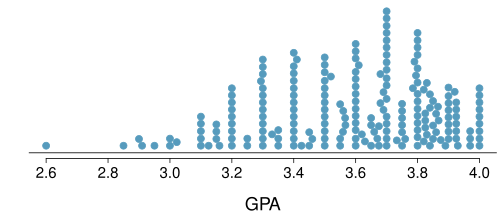
Biểu đồ tần suất và hình dạng
Biểu đồ tần suất - Giờ hoạt động ngoại khóa
- Biểu đồ tần suất (Histograms) cung cấp cái nhìn về mật độ dữ liệu (data density). Các cột cao hơn thể hiện nơi dữ liệu tương đối phổ biến hơn.
- Biểu đồ tần suất đặc biệt thuận tiện để mô tả hình dạng của phân phối dữ liệu.
- Độ rộng khoảng (bin width) được chọn có thể làm thay đổi câu chuyện mà biểu đồ tần suất đang kể.
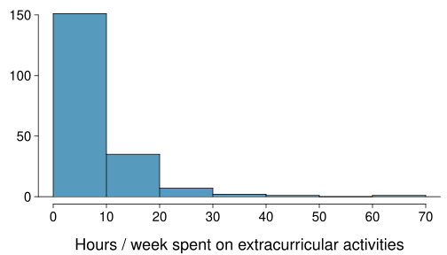
Độ rộng khoảng
Biểu đồ tần suất nào trong số này là hữu ích? Biểu đồ nào tiết lộ quá nhiều về dữ liệu? Biểu đồ nào che giấu quá nhiều?
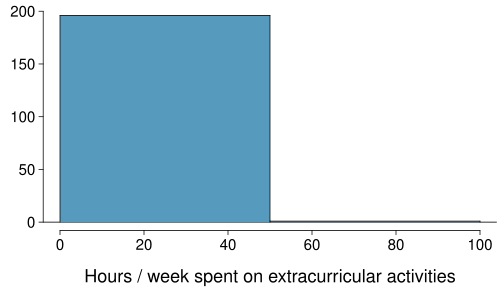
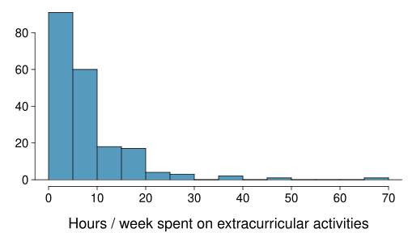
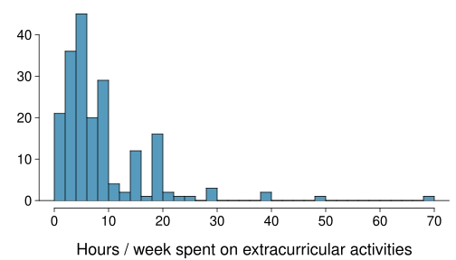
Hình dạng của phân phối: tính yếu vị
Biểu đồ tần suất có một đỉnh nổi bật duy nhất (đơn đỉnh (unimodal)), nhiều đỉnh nổi bật (song đỉnh/đa đỉnh (bimodal/multimodal)), hay không có đỉnh rõ rệt (đồng nhất (uniform))?
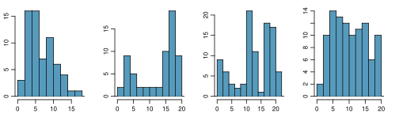
Hình dạng của phân phối: độ lệch
Biểu đồ tần suất lệch phải (right skewed), lệch trái (left skewed), hay đối xứng (symmetric)?
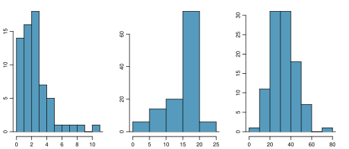
Biểu đồ tần suất được gọi là lệch về phía có chiếc đuôi dài.
Hình dạng của phân phối: các quan sát bất thường
Có bất kỳ quan sát bất thường hoặc giá trị ngoại lệ (outliers) tiềm năng nào không?
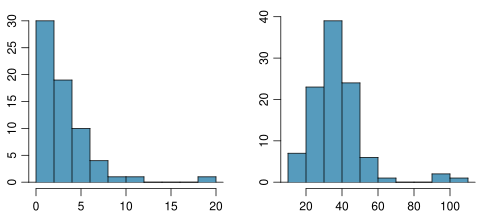
Hoạt động ngoại khóa
Hãy mô tả hình dạng của phân phối số giờ mỗi tuần sinh viên dành cho các hoạt động ngoại khóa như thế nào?
✍ Luyện tập
Kỳ vọng biến nào trong số này có phân phối đồng nhất?
- Cân nặng của phụ nữ trưởng thành
- Lương của một mẫu ngẫu nhiên những người từ Bắc Carolina
- Giá nhà
- Ngày sinh của các bạn cùng lớp (ngày trong tháng)
Hoạt động ứng dụng: Hình dạng của phân phối
Phác thảo phân phối kỳ vọng của các biến sau:
- Điểm trong một bài kiểm tra
- Điểm IQ
Hãy đưa ra một cách ngắn gọn (1-2 câu) để dạy ai đó cách xác định phân phối kỳ vọng của bất kỳ biến nào.
Bạn có điển hình không?
Chỉ số trung tâm đơn thuần có tác dụng như thế nào trong việc truyền đạt các đặc điểm thực sự của một phân phối?
Phương sai và độ lệch chuẩn
Phương sai
Phương sai (Variance) xấp xỉ bằng trung bình bình phương các độ lệch so với số trung bình.
\[ s^2 = \frac{\sum_{i = 1}^n (x_i - \bar{x})^2}{n - 1} \]
- Trung bình mẫu là \(\bar{x} = 6,71\), và kích thước mẫu là \(n = 217\).
- Phương sai của thời lượng ngủ mỗi đêm của sinh viên có thể được tính như sau:
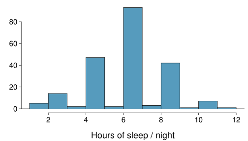
\[ s^2 = \frac{(5 - 6,71)^2 + (9 - 6,71)^2 + \cdots + (7 - 6,71)^2}{217 - 1} = 4,11~giờ^2 \]
Tại sao chúng ta sử dụng bình phương độ lệch trong việc tính toán phương sai?
- Để loại bỏ các giá trị âm sao cho các quan sát cách đều số trung bình được tính trọng số như nhau.
- Để tính trọng số cho các độ lệch lớn hơn nặng hơn.
Độ lệch chuẩn
Độ lệch chuẩn (standard deviation) là căn bậc hai của phương sai, và có cùng đơn vị với dữ liệu.
\[ s = \sqrt{s^2} \]
- Độ lệch chuẩn của thời lượng ngủ mỗi đêm của sinh viên có thể được tính là: \[ s = \sqrt{4,11} = 2,03~giờ\]
- Có thể thấy rằng tất cả các dữ liệu đều nằm trong khoảng 3 lần độ lệch chuẩn so với số trung bình.
Biểu đồ hộp, tứ phân vị và trung vị
Trung vị
- Trung vị (median) là giá trị chia dữ liệu thành hai nửa khi được sắp xếp theo thứ tự tăng dần. \[ 0,1,2,3,4 \]
- Nếu có một số lượng chẵn các quan sát, thì trung vị là trung bình cộng của hai giá trị ở giữa. \[ 0,1,2,3,4,5 \rightarrow \frac{2 + 3}{2} = 2,5 \]
- Vì trung vị là điểm giữa của dữ liệu, nên 50% các giá trị nằm dưới nó. Do đó, nó cũng là phân vị (percentile) thứ 50.
Q1, Q3 và IQR
- Phân vị thứ 25 còn được gọi là tứ phân vị thứ nhất (first quartile), Q1.
- Phân vị thứ 50 còn được gọi là trung vị.
- Phân vị thứ 75 còn được gọi là tứ phân vị thứ ba (third quartile), Q3.
- Giữa Q1 và Q3 là 50% dữ liệu ở giữa. Phạm vi mà các dữ liệu này trải rộng được gọi là khoảng cách tứ phân vị (interquartile range - IQR).
\[ IQR = Q3 - Q1 \]
Biểu đồ hộp
Chiếc hộp trong biểu đồ hộp (Box plots) đại diện cho 50% dữ liệu ở giữa, và vạch dày trong hộp là trung vị.
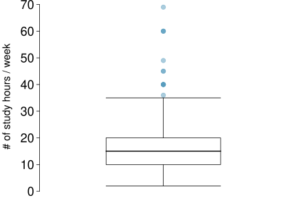
Biểu đồ hộp chi tiết
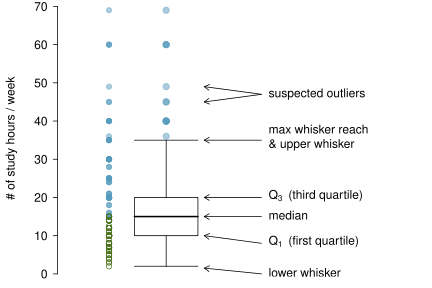
Giá trị ngoại lệ
- Whiskers của biểu đồ hộp có thể kéo dài tới \(1,5 \times IQR\) tính từ các tứ phân vị.
\[\begin{align*} \text{độ~vươn~tối~đa~của~whisker~trên} &= Q3 + 1,5 \times IQR \\ \text{độ~vươn~tối~đa~của~whisker~dưới} &= Q1 - 1,5 \times IQR \end{align*}\] \[\begin{align*} \text{IQR}&: 20 - 10 = 10 \\ \text{độ~vươn~tối~đa~của~whisker~trên}&= 20 + 1,5 \times 10 = 35 \\ \text{độ~vươn~tối~đa~của~whisker~dưới}&= 10 - 1,5 \times 10 = -5 \end{align*}\]
- Một giá trị ngoại lệ tiềm năng được định nghĩa là một quan sát nằm ngoài độ vươn tối đa của whisker. Đó là một quan sát có vẻ cực đoan so với phần còn lại của dữ liệu.
Tại sao việc tìm kiếm các giá trị ngoại lệ lại quan trọng?
- Xác định độ lệch cực đoan trong phân phối.
- Xác định các lỗi trong thu thập và nhập dữ liệu.
- Cung cấp cái nhìn sâu sắc về các đặc điểm thú vị của dữ liệu.
Thống kê bền vững
Các quan sát cực đoan
Các thống kê mẫu như trung bình, trung vị, độ lệch chuẩn và IQR của thu nhập hộ gia đình sẽ bị ảnh hưởng như thế nào nếu giá trị lớn nhất được thay thế bằng 10 triệu USD? Điều gì sẽ xảy ra nếu giá trị nhỏ nhất được thay thế bằng 10 triệu USD?
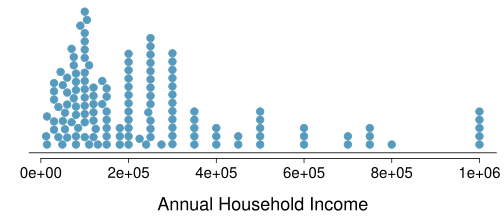
Thống kê bền vững
| kịch bản | trung vị | IQR | \(\bar{x}\) | \(s\) |
|---|---|---|---|---|
| dữ liệu gốc | 190K | 200K | 245K | 226K |
| chuyển giá trị lớn nhất lên $10M | 190K | 200K | 309K | 853K |
| chuyển giá trị nhỏ nhất lên $10M | 200K | 200K | 316K | 854K |
Thống kê bền vững
Trung vị và IQR bền vững (Robust statistics) hơn với độ lệch và các giá trị ngoại lệ so với trung bình và độ lệch chuẩn. Do đó,
- đối với các phân phối bị lệch, thường hữu ích hơn khi sử dụng trung vị và IQR để mô tả trung tâm và độ phân tán
- đối với các phân phối đối xứng, thường hữu ích hơn khi sử dụng trung bình và độ lệch chuẩn để mô tả trung tâm và độ phân tán
Nếu muốn ước tính thu nhập hộ gia đình điển hình của một sinh viên, bạn sẽ quan tâm nhiều hơn đến thu nhập trung bình hay trung vị?
Trung bình so với trung vị
- Nếu phân phối đối xứng, trung tâm thường được định nghĩa là trung bình: trung bình \(\approx\) trung vị
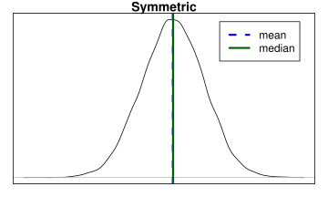
- Nếu phân phối bị lệch hoặc có các giá trị ngoại lệ cực đoan, trung tâm thường được định nghĩa là trung vị
- Lệch phải: trung bình \(>\) trung vị
- Lệch trái: trung bình \(<\) trung vị
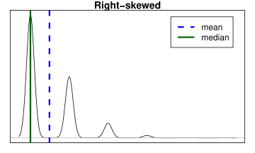
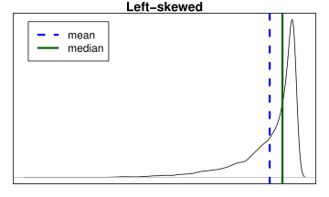
✍ Luyện tập
Điều nào sau đây có khả năng đúng nhất đối với phân phối tỷ lệ thời gian thực sự dành cho việc ghi chép trong lớp so với trên Facebook, Twitter, v.v.?
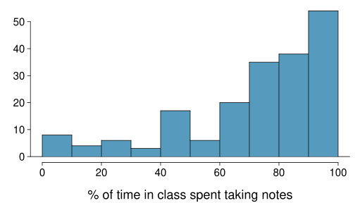
- trung vị: 80%
- trung bình: 76%
- trung bình > trung vị
- trung bình < trung vị
- trung bình \(\approx\) trung vị
- không thể biết được
Biến đổi dữ liệu
Dữ liệu cực kỳ lệch
Khi dữ liệu cực kỳ lệch, biến đổi dữ liệu (Transforming data) có thể giúp việc xây dựng mô hình dễ dàng hơn. Một phép biến đổi phổ biến là biến đổi log (log transformation).
Biểu đồ tần suất bên trái cho thấy phân phối số lượng trận bóng rổ sinh viên đã tham dự. Biểu đồ tần suất bên phải cho thấy phân phối log của số trận đã tham dự.
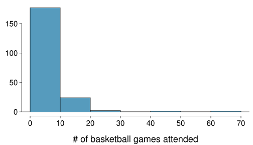
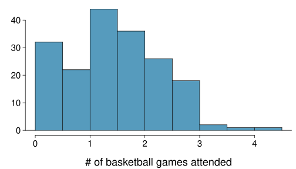
Ưu và nhược điểm của các phép biến đổi
- Dữ liệu bị lệch dễ xây dựng mô hình hơn khi chúng được biến đổi vì các giá trị ngoại lệ có xu hướng trở nên ít nổi bật hơn nhiều sau một phép biến đổi thích hợp.
| số trận | 70 | 50 | 25 | \(\cdots\) |
|---|---|---|---|---|
| log(số trận) | 4,25 | 3,91 | 3,22 | \(\cdots\) |
- Tuy nhiên, kết quả phân tích theo đơn vị log của biến được đo lường có thể khó diễn giải.
Kỳ vọng những biến nào khác sẽ bị lệch cực đoan?
Dữ liệu bản đồ
Bản đồ cường độ
Những quy luật nào rõ rệt trong sự thay đổi dân số giữa năm 2000 và 2010?
3.2 Dữ liệu định danh
Bảng ngẫu nhiên và biểu đồ cột
Bảng ngẫu nhiên
Một bảng tóm tắt dữ liệu cho hai biến định danh (categorical data) được gọi là bảng ngẫu nhiên (Contingency tables).
Bảng ngẫu nhiên bên dưới cho thấy sự phân bổ về khả năng sống sót và độ tuổi của hành khách trên tàu Titanic.
| Sống sót | ||||
|---|---|---|---|---|
| Tử vong | Sống sót | Tổng | ||
| giới tính | Người lớn | 1438 | 654 | 2092 |
| Trẻ em | 52 | 57 | 109 | |
| Tổng | 1490 | 711 | 2201 |
Biểu đồ cột
Biểu đồ cột (bar plots) là một cách phổ biến để hiển thị một biến định danh duy nhất. Biểu đồ cột hiển thị tỷ lệ thay vì tần suất được gọi là biểu đồ cột tần suất tương đối (relative frequency bar plot).
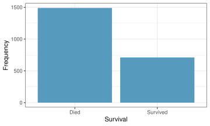
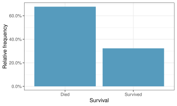
Biểu đồ cột khác với biểu đồ tần suất như thế nào?
Biểu đồ cột được sử dụng để hiển thị phân phối của các biến định danh, biểu đồ tần suất được sử dụng cho các biến số. Trục x trong biểu đồ tần suất là một trục số, do đó thứ tự của các cột không thể thay đổi. Trong biểu đồ cột, các danh mục có thể được liệt kê theo bất kỳ thứ tự nào (mặc dù một số cách sắp xếp có ý nghĩa hơn những cách khác, đặc biệt đối với các biến thứ tự (ordinal variables).)
Tỷ lệ hàng và tỷ lệ cột
Chọn tỷ lệ thích hợp
Có vẻ như có mối liên hệ nào giữa độ tuổi và khả năng sống sót của hành khách trên tàu Titanic không?
| Sống sót | ||||
|---|---|---|---|---|
| Tử vong | Sống sót | Tổng | ||
| Tuổi | Người lớn | 1438 | 654 | 2092 |
| Trẻ em | 52 | 57 | 109 | |
| Tổng | 1490 | 711 | 2201 |
Để trả lời câu hỏi này, kiểm tra tỷ lệ hàng (row proportions):
- % Người lớn sống sót: 654 / 2092 \(\approx 0,31\)
- % Trẻ em sống sót: 57 / 109 \(\approx 0,52\)
Sử dụng biểu đồ cột với hai biến
Biểu đồ cột với hai biến
- Biểu đồ cột chồng (Stacked bar plot): Hiển thị đồ họa thông tin bảng ngẫu nhiên, cho các số đếm.
- Biểu đồ cột cạnh nhau (Side-by-side bar plot): Hiển thị cùng một thông tin bằng cách đặt các cột cạnh nhau, thay vì chồng lên nhau.
- Biểu đồ cột chồng chuẩn hóa (Standardized stacked bar plot): Hiển thị đồ họa thông tin bảng ngẫu nhiên, cho các tỷ lệ.
Sự khác biệt giữa ba hình ảnh trực quan hóa hiển thị bên dưới là gì?
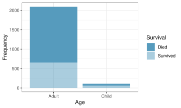
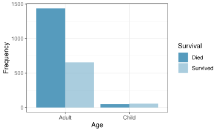
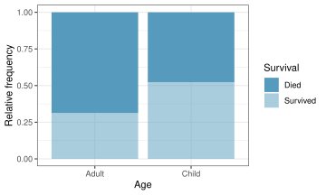
Biểu đồ Mosaic
Sự khác biệt giữa hai hình ảnh trực quan hóa hiển thị bên dưới là gì?
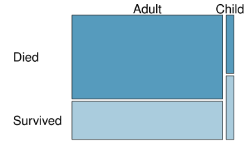
Biểu đồ tròn
Bạn có thể cho biết bộ nào chiếm tỷ lệ thấp nhất trong các loài động vật có vú không?
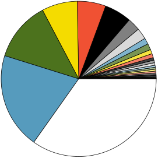
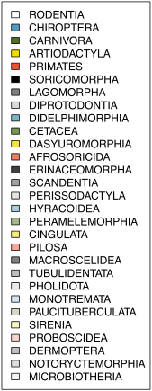
Dữ liệu từ http://www.bucknell.edu/msw3.
So sánh dữ liệu số giữa các nhóm
Biểu đồ hộp cạnh nhau
Có vẻ như có mối quan hệ giữa năm học và số lượng câu lạc bộ mà sinh viên tham gia không?
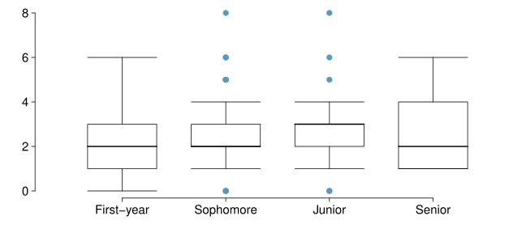
3.3 Hệ số tương quan
Có khá nhiều hệ số đo sự tương quan giữa hai biến số định lượng \(x\) và \(y\).
Hệ số tương quan Pearson
Hệ số tương quan Pearson được tính như sau:
\[ r = \frac{\sum_{i=1}^n (x_i - \bar{x})(y_i - \bar{y})}{(n-1)s_x s_y}, \]
trong đó \(x_i\) và \(y_i\) là các giá trị của hai biến số, \(\bar{x}\) và \(\bar{y}\) là trung bình của hai biến số, \(s_x\) và \(s_y\) là độ lệch chuẩn của hai biến số, và \(n\) là kích thước mẫu.
Ý nghĩa
- Nếu \(r \approx 1\), hai biến số có tương quan dương mạnh. Ví dụ: chiều cao và cân nặng của con người.
- Nếu \(r \approx -1\), hai biến số có tương quan âm mạnh. Ví dụ: số giờ học và số lỗi sai trong bài thi.
- Nếu \(r \approx 0\), hai biến số không có tương quan. Ví dụ: chiều cao và trình độ học vấn.
Hệ số Spearman
Hệ số tương quan Spearman là một thước đo thống kê về mối quan hệ đơn điệu giữa hai biến số. Nó không yêu cầu mối quan hệ tuyến tính, chỉ cần mối quan hệ đơn điệu.
Hệ số tương quan Spearman được tính như sau:
\[ \rho = 1 - \frac{6 \sum d_i^2}{n(n^2 - 1)}, \]
trong đó \(d_i\) là sự khác biệt về hạng (rank) giữa hai biến số, và \(n\) là kích thước mẫu.
Ý nghĩa
- Nếu \(\rho \approx 1\), hai biến số có tương quan đơn điệu dương mạnh.
- Nếu \(\rho \approx -1\), hai biến số có tương quan đơn điệu âm mạnh.
- Nếu \(\rho \approx 0\), hai biến số không có tương quan đơn điệu.
Hệ số tương quan Kendall
Hệ số tương quan Kendall là một thước đo thống kê mức độ đồng biến thứ hạng giữa hai biến.
Hệ số tương quan Kendall được tính như sau:
\[ \tau = \frac{\text{số cặp đồng hạng} - \text{số cặp nghịch hạng}}{\frac{n(n-1)}{2}}, \]
trong đó \(n\) là kích thước mẫu.
Ý nghĩa
- Nếu \(\tau \approx 1\), hai biến số có tương quan đơn điệu dương mạnh.
- Nếu \(\tau \approx -1\), hai biến số có tương quan đơn điệu âm mạnh.
- Nếu \(\tau \approx 0\), hai biến số không có tương quan đơn điệu.
So sánh ba hệ số tương quan
| Hệ số | Dựa trên | Đo cái gì |
|---|---|---|
| Pearson | giá trị thực | quan hệ tuyến tính |
| Spearman | rank | quan hệ đơn điệu |
| Kendall | cặp thứ hạng | mức độ đồng thuận thứ tự |
3.4 Case Study: Phân biệt đối xử theo giới tính
Mô tả nghiên cứu và dữ liệu
Phân biệt đối xử theo giới tính
- Năm 1972, như một phần của nghiên cứu về phân biệt đối xử theo giới tính (Gender discrimination), 48 nam giám sát viên ngân hàng được cấp cùng một hồ sơ nhân sự và được yêu cầu đánh giá xem người đó có nên được thăng chức lên vị trí quản lý chi nhánh vốn được mô tả là “công việc thường nhật” hay không.
- Các hồ sơ giống hệt nhau ngoại trừ việc một nửa số giám sát viên nhận hồ sơ ghi người đó là nam trong khi nửa còn lại nhận hồ sơ ghi người đó là nữ.
- Việc giám sát viên nào nhận được đơn đăng ký “nam” và người nào nhận đơn “nữ” đã được xác định ngẫu nhiên.
- Trong số 48 hồ sơ được xem xét, 35 hồ sơ được thăng chức.
- Nghiên cứu đang kiểm tra xem liệu phụ nữ có bị phân biệt đối xử bất công hay không.
Đây là nghiên cứu quan sát (observational study) hay thực nghiệm (experiment)?
Thực nghiệm
B.Rosen và T. Jerdee (1974), “Influence of sex role stereotypes on personnel decisions”, J.Applied Psychology, 59:9-14.
Dữ liệu
Nhìn thoáng qua ban đầu, có vẻ như có mối liên hệ giữa việc thăng chức và giới tính không?
| Thăng chức | ||||
|---|---|---|---|---|
| Được thăng chức | Không thăng chức | Tổng | ||
| Giới tính | Nam | 21 | 3 | 24 |
| Nữ | 14 | 10 | 24 | |
| Tổng | 35 | 13 | 48 |
- % nam giới được thăng chức: 21 / 24 = 0,875
- % nữ giới được thăng chức: 14 / 24 = 0,583
✍ Luyện tập
Chúng ta thấy sự khác biệt gần 30% (chính xác là 29,2%) giữa tỷ lệ hồ sơ nam và nữ được thăng chức. Dựa trên thông tin này, điều nào dưới đây là đúng?
- Nếu chúng ta lặp lại thực nghiệm, chúng ta chắc chắn sẽ thấy nhiều hồ sơ nữ được thăng chức hơn. Đây chỉ là một sự ngẫu nhiên.
- Việc thăng chức phụ thuộc vào giới tính, nam giới có nhiều khả năng được thăng chức hơn, và do đó có sự phân biệt đối xử theo giới tính đối với phụ nữ trong các quyết định thăng chức. (Có thể)
- Sự khác biệt về tỷ lệ hồ sơ nam và nữ được thăng chức là do ngẫu nhiên, đây không phải là bằng chứng của sự phân biệt đối xử theo giới tính đối với phụ nữ trong các quyết định thăng chức. (Có thể)
- Phụ nữ kém năng lực hơn nam giới, và đây là lý do tại sao ít nữ giới được thăng chức hơn.
Các tuyên bố cạnh tranh
Hai tuyên bố cạnh tranh
- “Không có chuyện gì xảy ra cả.” Việc thăng chức và giới tính là độc lập, không có phân biệt đối xử theo giới tính, sự khác biệt quan sát được về tỷ lệ chỉ đơn giản là do ngẫu nhiên. \(\rightarrow\) Giả thuyết không (Null hypothesis)
- “Có chuyện gì đó đang diễn ra.” Việc thăng chức và giới tính là phụ thuộc, có sự phân biệt đối xử theo giới tính, sự khác biệt quan sát được về tỷ lệ không phải do ngẫu nhiên. \(\rightarrow\) Giả thuyết đối (Alternative hypothesis)
Một phiên tòa như một kiểm định giả thuyết
- Kiểm định giả thuyết (Hypothesis testing) rất giống như một phiên tòa xét xử.
- \(H_0\): Bị cáo vô tội
- \(H_A\): Bị cáo có tội
- Sau đó chúng ta trình bày bằng chứng - thu thập dữ liệu.
Hình ảnh từ http://www.nwherald.com/_internal/cimg!0/oo1il4sf8zzaqbboq25oevvbg99wpot.
Sau đó chúng ta đánh giá bằng chứng - “Liệu những dữ liệu này có khả năng xảy ra do ngẫu nhiên nếu giả thuyết không là đúng không?”
- Nếu chúng rất khó có khả năng xảy ra, thì bằng chứng sẽ làm dấy lên nghi ngờ hợp lý trong tâm trí chúng ta về giả thuyết không.
Cuối cùng chúng ta phải đưa ra quyết định. Khó xảy ra ở mức nào là đủ?
Nếu bằng chứng không đủ mạnh để bác bỏ giả định vô tội, bồi thẩm đoàn sẽ đưa ra phán quyết “không có tội”.
- Bồi thẩm đoàn không nói rằng bị cáo vô tội, chỉ là không có đủ bằng chứng để kết tội.
- Trên thực tế, bị cáo có thể vô tội, nhưng bồi thẩm đoàn không có cách nào để chắc chắn.
Nói theo cách thống kê, chúng ta chưa đủ bằng chứng để bác bỏ giả thuyết không.
- Chúng ta không bao giờ tuyên bố giả thuyết không là đúng, bởi vì chúng ta đơn giản là không biết nó có đúng hay không.
- Do đó chúng ta không bao giờ “chấp nhận giả thuyết không”.
Trong một phiên tòa, nghĩa vụ chứng minh thuộc về bên công tố.
Trong một kiểm định giả thuyết, nghĩa vụ chứng minh thuộc về tuyên bố bất thường.
Giả thuyết không là trạng thái bình thường của sự việc (hiện trạng), vì vậy giả thuyết đối mới là điều chúng ta coi là bất thường và cần thu thập bằng chứng.
Tóm tắt: khuôn khổ kiểm định giả thuyết
- Chúng ta bắt đầu với một giả thuyết không (\(H_0\)) đại diện cho hiện trạng.
- Chúng ta cũng có một giả thuyết đối (\(H_A\)) đại diện cho câu hỏi nghiên cứu của chúng ta, tức là những gì chúng ta đang kiểm tra.
- Chúng ta thực hiện kiểm định giả thuyết dưới giả định rằng giả thuyết không là đúng, thông qua mô phỏng (simulation) (hôm nay) hoặc các phương pháp lý thuyết (về sau trong khóa học).
- Nếu kết quả kiểm định cho thấy dữ liệu không cung cấp bằng chứng thuyết phục cho giả thuyết đối, chúng ta giữ nguyên giả thuyết không. Nếu có, thì chúng ta bác bỏ giả thuyết không để ủng hộ giả thuyết đối.
Kiểm định thông qua mô phỏng
Mô phỏng thực nghiệm…
… dưới giả định về tính độc lập, tức là để mọi thứ cho sự ngẫu nhiên.
Nếu kết quả từ các mô phỏng dựa trên mô hình ngẫu nhiên (chance model) trông giống như dữ liệu thực tế, thì chúng ta có thể xác định rằng sự khác biệt giữa tỷ lệ hồ sơ được thăng chức giữa nam và nữ chỉ đơn giản là do ngẫu nhiên (việc thăng chức và giới tính là độc lập).
Nếu kết quả từ các mô phỏng dựa trên mô hình ngẫu nhiên không giống với dữ liệu, thì chúng ta có thể xác định rằng sự khác biệt giữa tỷ lệ hồ sơ được thăng chức giữa nam và nữ không phải do ngẫu nhiên, mà là do tác động thực sự của giới tính (việc thăng chức và giới tính là phụ thuộc).
Hoạt động ứng dụng: mô phỏng thực nghiệm
Sử dụng một bộ bài tây để mô phỏng thực nghiệm này.
- Để một quân bài hình người đại diện cho không thăng chức và một quân bài không phải hình người đại diện cho được thăng chức. Coi quân Át (A) là bài hình người.
- Loại bỏ các quân Joker.
- Lấy ra 3 quân Át \(\rightarrow\) có chính xác 13 quân bài hình người còn lại trong bộ bài (các quân hình người: A, K, Q, J).
- Lấy ra một quân bài số \(\rightarrow\) có chính xác 35 quân bài số (không hình người) còn lại trong bộ bài (các quân số: 2-10).
- Tráo bài và chia chúng thành hai nhóm có kích thước 24, đại diện cho nam và nữ.
- Đếm và ghi lại có bao nhiêu hồ sơ trong mỗi nhóm được thăng chức (các quân bài số).
- Tính tỷ lệ hồ sơ được thăng chức trong mỗi nhóm và lấy hiệu số (nam - nữ), và ghi lại giá trị này.
- Lặp lại các bước 2 - 4 nhiều lần.**
Bước 1
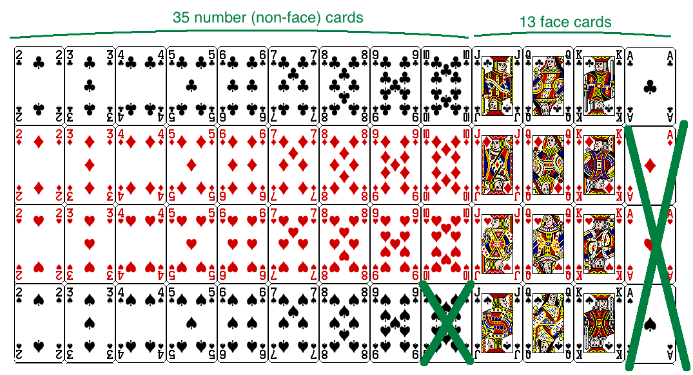
Bước 2 - 4
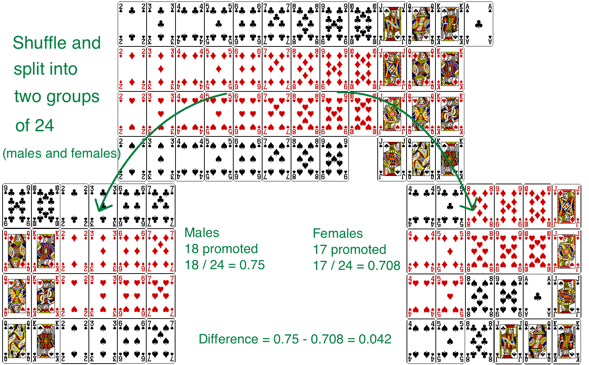
Kiểm tra tính độc lập
✍ Luyện tập
Kết quả mô phỏng bạn vừa thực hiện có cung cấp bằng chứng thuyết phục về sự phân biệt đối xử giới tính đối với phụ nữ không, tức là sự phụ thuộc giữa giới tính và các quyết định thăng chức?
- Không, dữ liệu không cung cấp bằng chứng thuyết phục cho giả thuyết đối, do đó chúng ta không thể bác bỏ giả thuyết không về tính độc lập giữa giới tính và các quyết định thăng chức. Sự khác biệt quan sát được giữa hai tỷ lệ là do ngẫu nhiên.
- Có, dữ liệu cung cấp bằng chứng thuyết phục cho giả thuyết đối về sự phân biệt đối xử giới tính đối với phụ nữ trong các quyết định thăng chức. Sự khác biệt quan sát được giữa hai tỷ lệ là do tác động thực sự của giới tính.
Mô phỏng bằng phần mềm
Các mô phỏng này rất tẻ nhạt và chậm nếu chạy bằng phương pháp đã mô tả trước đó. Trong thực tế, chúng ta sử dụng phần mềm để tạo các mô phỏng. Biểu đồ chấm bên dưới hiển thị phân phối của các hiệu số tỷ lệ thăng chức mô phỏng dựa trên 100 lần mô phỏng.
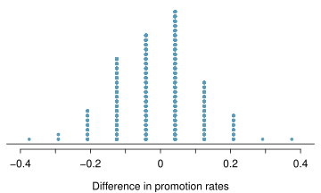